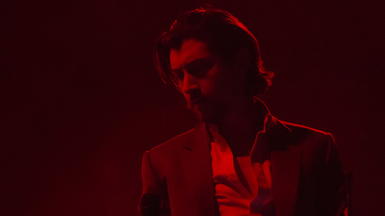

Arctic Monkeys es una banda británica de indie rock, formada en Sheffield, Reino Unido. El grupo está compuesto por el guitarrista principal y vocalista Alex Turner, el guitarrista Jamie Cook, el baterista Matt Helders, y con Nick O'Malley en el bajo. Su primer álbum, Whatever People Say I Am, That's What I'm Not, fue galardonado en 2007 como el "mejor álbum británico". El segundo álbum de la banda, Favourite Worst Nightmare, se lanzó el 23 de abril de 2007 y vendió más de 225 000 copias en su primera semana de lanzamiento, además de ser nominado para el Mercury Prize de 2007. El quinto y más exitoso álbum de la banda, es conocido como AM, es el más vendido, con salida el 15 de julio de 2013. La banda también ganó los premios a mejor banda británica y mejor álbum británico en los Brit Awards de 2008 y 2014. El 18 de mayo del 2018 después de cinco años lanzan su sexto disco de estudio Tranquility Base Hotel & Casino
En 2001 los vecinos, Alex Turner y Jamie Cook pidieron algún instrumento musical como regalo de Navidad. Después de haber aprendido a tocar por su cuenta, la pareja formó una banda con los amigos de la escuela de Turner (Stocksbridge High School), Andy Nicholson y Matt Helders. Nicholson ya sabía tocar el bajo, así que Helders terminó en la batería. "Eso era lo único que faltaba", según Helders. En un artículo de la revista Blender de mayo de 2006 se mencionó que Turner no era el vocalista original - "Cuando su primer vocalista, Glyn Jones, dejó la banda después de unos meses, Turner tomó el micrófono."Este hecho fue nuevamente reportado más detalladamente en el tabloide británico The Sun, en el cual Jones cuenta que una tarde, después de unos exámenes, estaban aburridos con Alex, así que empezaron a escribir una canción acerca de Sheffield, ciudad natal de la banda. Glyn era el cantante principal sólo porque "Alex era muy tímido y no era consciente de su gran voz... pero estaba contento tocando su guitarra."
2003
Sus primeros ensayos los hicieron en los Estudios Yellow Arch en Neepsend, mientras que su primer concierto fue el 12 de junio de 2003 en The Grapes en Sheffield. Después de unas cuantas presentaciones, empezaron a grabar demos y a grabarlos en CD para regalarlos en los conciertos. Con un número limitado de CD disponibles, los fans comenzaron a ripear la música en sus ordenadores y a compartirla entre ellos. Al grupo no le importó, diciendo que "nunca hicimos esas demos para hacer dinero ni nada. Estábamos regalándolas de todos modos, era la mejor manera de que la gente las escuchara.

2005
Comenzaron a ganar popularidad en el norte de Inglaterra, siendo el núcleo de su popularidad el lugar donde la banda solía tocar a menudo, The Boardwalk. En mayo de 2005, la banda lanzó su primer EP, Five Minutes with Arctic Monkeys, el cual contenía las canciones "Fake Tales of San Francisco" y "From the Ritz to the Rubble". Dicho lanzamiento fue limitado a 500 CD y a 1000 LP, estuvo también disponible para su descarga en iTunes Music Store. Poco después, la banda tocó en la Carling Stage de los Festivales de Reading y Leeds, un festival reservado para bandas poco conocidas o sin discográfica. Su aparición estuvo repleta de periodistas y fue recibida por una multitud, mayor a la de otro concierto anterior, además de haber sido aclamada por la crítica. En el concierto, el público continuamente estuvo cantando junto a la banda.
Contratos discográficos
La banda se resistió a firmar con una discográfica, afirmando que se negaban a cambiar sus canciones según lo que le conviniese a la industria.
"Antes de que empezara la historia, las discografías dirían, "me agradas, pero no estoy seguro de esta pequeña parte, y de que la canción pueda lidiar con las posiciones en las listas... ." Nunca los escuchamos."
"Alex Turner"
"El éxito de su estrategia fue ilustrado por series de conciertos con entradas agotadas en el Reino Unido. En octubre de 2005 agotaron las entradas en un concierto en el teatro London Astoria, y Turner vio este hecho como una confirmación de que estaban justificados para ignorar a las compañías discográficas: "una vez que todo empezó, ya nada más importó. En Londres, los chicos estaban viendo a la banda, y las compañías discográficas eran testigo de esto."